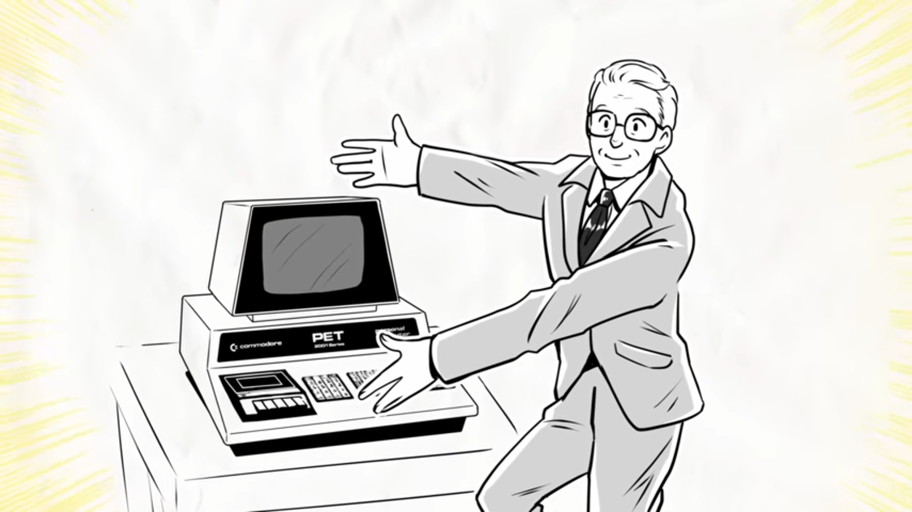

| Aquí conoceremos a un empresario llamado Jack Tramiel dueño de Comodore era reconocido como un empresario despreciable y audaz este aprovecho en pedir un cargamento a Mos y se dedicaron a encontrar este error aunque fuera minúsculo el error Jack y su equipo hicieron creer a Mos Technology que este era un error crítico , Mos Technology en tiempos de angustia por falta económica se puso a la venta toda la empresa y Jack la compro sin dudarla por un precio demasiado ridículo. | |
 | Aquí es donde Chuck Peddle viendo todo esto se entusiasmó ya que tendría capital para sus proyectos, pero sus esperanzas se esfumaron rápidamente al ver que Jack solo compro a Mos por un solo motivo que era mejorar y vender calculadoras, Chuck inmediatamente agarro sus cosas. |
| Un empleado de Comodore vio a Chuck saliendo de la empresa con sus cosas y este asustado viendo al mejor ingeniero de Mos largándose apenas se completó la compra fue alarmarte y este llamo a Jack avisándole, lo que por el simple aviso Jack propuso una junta con Chuck. Lo que paso exactamente en esta junta no se sabe a exactitud solo se sabe que acordaron que Chuck trabajaría para Comodore bajo un proyecto secreto para un ordenador casero y su cliente era RadioShack y con un tiempo límite increíblemente pequeño, las demás condiciones aún no se saben en su totalidad. |  |
|  | Chuck dio todo de su parte para completar el proyecto, pero Jack por su ambición de vender calculadoras este le ofreció a RadioShack este último sabiendo el futuro de las calculadoras que ya eran obsoletas lo tomaron como un insulto y cancelo el trato dejando todo el proyecto a riendas de esta a Comodore. El resultado de esta fue unas de las primeras consolas la “Comodore pet” pero en una época donde ya salieron Nintendo o sega la misma Comodore no fue muy conocida en su momento y ahora solo es una simple parte de la historia dentro el ámbito tecnológico. |